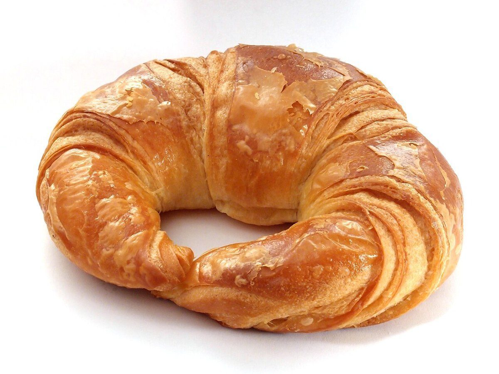

カフェ / 岩手県花巻市城内
優しい時間

岩手県花巻市のカフェ「Cafe 優しい時間」のご案内ページです。営業時間やメニューなど、詳しいことは準備中。まずはInstagramをのぞいてみてください。
制作側の連想
世界時計の時差表
「優しい時間」という屋号から、制作側が「時間」の言葉を連想し、世界時計の時差表の形でまとめました。これは制作側の連想で、お店の理念・由来とは無関係です。
基準となる入口をUTC+00:00とし、5つのページを+00:00から+04:00までの「時差」に見立てました。数字は飾りで、営業時間などを表すものではありません。
白い背景で見る(イメージ)
ひと粒、ひと切れ。
写真はお店のものではなく、国外または撮影地不明のフリー素材です。お店で提供しているものを示すものではありません。


ご案内
お店のこと(確認できたものだけ)
| 所在地 | 〒025-0076 岩手県花巻市城内3-4 |
|---|---|
| 電話 | 0198-29-4270 |
| 営業時間 | 準備中 |
| 定休日 | 準備中 |
| ご予約 | 準備中 |
| 駐車場 | 準備中 |
| SNS | Instagram @cafe.yasasii.jikan |